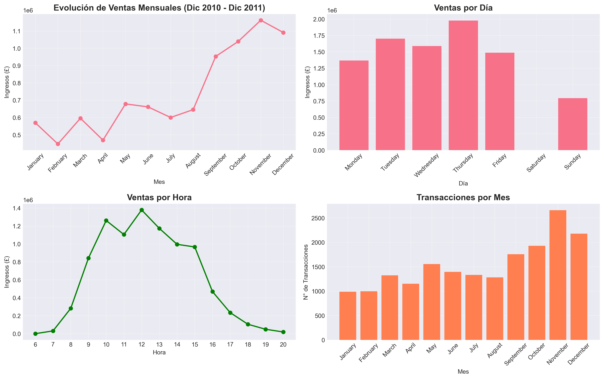

El problema
Comprender el comportamiento de compra de un e-commerce del Reino Unido a partir de más de 540,000 transacciones reales, para identificar patrones temporales y geográficos, segmentar clientes, y traducir esos patrones en recomendaciones comerciales concretas.
Metodología
El análisis cubrió el desempeño general del negocio (ingresos, clientes, productos), patrones temporales (estacionalidad, días y horas de mayor demanda), comportamiento geográfico de las ventas, y una segmentación de clientes mediante el modelo RFM (Recencia, Frecuencia, Monto).
Herramientas utilizadas
Hallazgos principales
- Noviembre concentra el mayor volumen de ventas: reflejando una fuerte estacionalidad asociada a las compras navideñas.
- La ventana de mayor actividad es de 10:00 a 15:00 horas: marcando el momento óptimo para campañas y promociones.
- Reino Unido concentra la gran mayoría de los ingresos: dejando ver una oportunidad clara de expansión internacional aún poco explotada.
- El mapa de calor por día y hora muestra picos de lunes a viernes: con baja actividad los fines de semana y después de las 17:00.
Recomendaciones estratégicas
Implementar programas de fidelización para los clientes de mayor valor identificados por RFM, concentrar campañas estacionales en el cuarto trimestre, aprovechar las horas de mayor actividad para cross-selling y lanzamientos de producto, reactivar clientes con alta recencia de compra, y evaluar una expansión comercial hacia Alemania, Francia y España como siguientes mercados.
Metodología técnica
Ver metodología utilizada
Se procesaron más de 540,000 transacciones con Python (pandas y NumPy), separando el análisis en tres frentes: desempeño general del negocio, patrones temporales/geográficos, y segmentación de clientes.
La segmentación se construyó con el modelo RFM (Recencia, Frecuencia, Monto): para cada cliente se calculó cuánto tiempo ha pasado desde su última compra, cuántas compras ha hecho en total, y cuánto ha gastado — combinando las tres métricas para identificar los segmentos de mayor valor y los clientes con riesgo de inactividad.
Las visualizaciones (heatmap de ventas por día/hora, series temporales, distribución geográfica) se construyeron con Matplotlib y Seaborn, documentado todo en un Jupyter Notebook.
Visualizaciones

Tendencia de Ventas y Transacciones